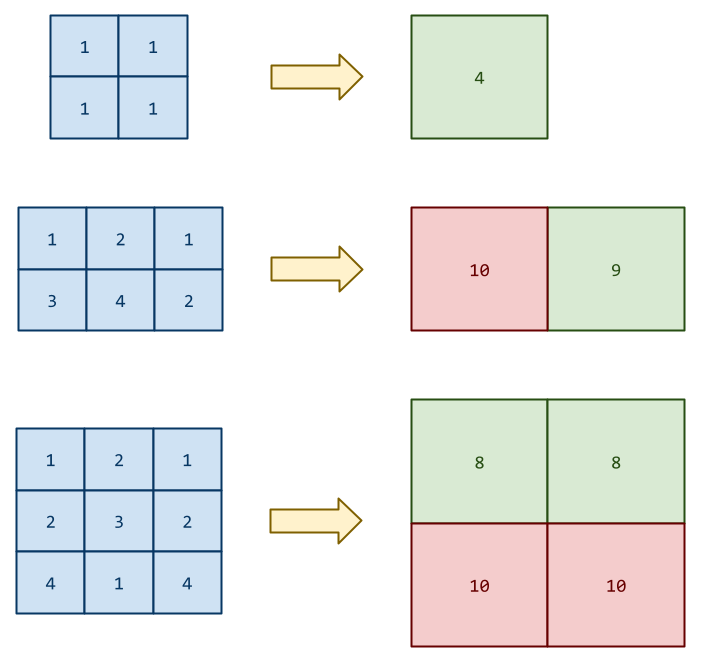

You just can't escape the Matrix. Even in your sleep, you still have
nightmares of visiting the ORACLE and banging your head against the wall
doing the assignments in Systems Programming. You are hopeful that the
instructor is even more respectful of your time outside of class, but
you have your doubts...
Fortunately, in this problem, you are dealing with a different type of matrix:
Given an
n x m2D matrix consisting of numbers between1and9, find the minimum four square. That is, find the smallest total of four adjacent cells in the given matrix as shown to the right.
In the first example to the right, there is only one four square
consisting of all 1s, so the minimum four square has a total of 4.

In the second example to the right, there are two four squares: The
first consists of 1, 2, 3, 4, which sums to 10. The second consists
of 2, 1, 4, 2, which sums to 9. This means that the minimum four
square has a total of 9.
In the third example to the right, there are four four squares. The
two top four squares consist of 1, 2, 2, 3 and sum to 8, while the
bottom four squares consist of 2, 3, 4, 1 and sum to 10. This
means that the minimum four square has a total of 8.
Input¶
You will be given a series of matrices in the following format:
N M
D_1_1 ... D_1_M
...
D_N_1 ... D_N_M
That is, the first line has the numbers N and M (where N and M are
between 2 and 50), which represents the dimensions of the proceeding
matrix. This is followed by N x M integers that represent the data
in the matrix.
Here is an example input:
2 2
1 1
1 1
2 3
1 2 1
3 4 2
3 3
1 2 1
2 3 2
4 1 4
0 0
This sample input corresponds to the matrixes in the diagram above.
Note: The input is terminated by a final 0 0 for the N and M values.
Output¶
For each matrix in the input stream, you are to find the minimum four square and print out its total in the following format:
{Matrix #}. Minimum four square is: {Total of Smallest Four Square}
Here is the output given the example input above:
1. Minimum four square is: 4
2. Minimum four square is: 9
3. Minimum four square is: 8
Note: You must match the output format exactly.
Algorithmic Complexity¶
For each input test case, your solution should have the following targets:
| Time Complexity | O(N*M), where N and M correspond to the dimensions of each matrix. |
| Space Complexity | O(1) |
Your solution may be below the targets, but it should not exceed them.
Submission¶
To submit your work, follow the same procedure you used for Reading 00:
$ cd path/to/cse-30872-su26-assignments # Go to assignments repository
$ git switch master # Make sure we are on master
$ git pull --rebase # Pull any changes from GitHub
$ git checkout -b challenge01 # Create and checkout challenge01 branch
$ $EDITOR challenge01/program.cpp # Edit your code
$ git add challenge01/program.cpp # Stage your changes
$ git commit -m "Challenge 01: Code" # Commit your changes
$ git push -u origin challenge01 # Send changes to GitHub
Programming Languages¶
Note, dredd supports C, C++, Python, Java, Go, Node, Ruby,
and Guile. You may use any of those languages, just be sure to name your
source file program.$EXTENSION where $EXTENSION is the appropriate file
extension for your chosen language (e.g. py for Python).
If you wish to try out another language, please let the instructor know and support can be added to dredd.
To check your code, you can use the .scripts/check.py script or curl:
# Check code by submitting to dredd using provided script
$ .scripts/check.py
Checking challenge01 program.py ...
Result Success
Time 0.21
--------------------
Score 6.00 / 6.00
Grade 1.00 / 1.00
# Check code by submitting to dredd using curl
$ curl -F source=@challenge01/program.cpp https://dredd.h4x0r.space/code/cse-30872-su26/challenge01
{"result": "Success", "score": 6, "time": 0.11381292343139648, "value": 6, "status": 0}
The score returned from dredd will be one of the following:
| Score | Description | Notes |
|---|---|---|
| 6.0 | Success | Program has successfully passed all test cases within the provided time limit. |
| 5.0 | Output Format Error | Output appears mostly correct, except the formatting is wrong (usually a whitespace or spelling error). |
| 4.0 | Time Limit Exceeded | Program did not terminate within the provided time limit (10 seconds). |
| 3.0 | Wrong Answer | Output does not match test cases. |
| 2.0 | Execution Error | Program did not terminate successfully (usually a segmentation fault or exception) |
| 1.0 | Compilation Error | Program failed to compile (usually a syntax error) |
Test Cases¶
Note, dredd contains additional test cases beyond that which is show in the examples above. This means that even if you pass on the input above, you are not guaranteed to pass the dredd test if you do not handle additional situations.
This means you should consider what the possible edge cases are and how to handle them. Feel free to create your own input and output test files and use them to verify your program:
# Manually test program
$ ./program < input.txt | diff -u - output.txt
To access a special debugging mode of the check.py script, you can use
the following to get the output ofr dredd.
# Get debugging output from dredd
$ DEBUG=1 ../.scripts/check.py
Acknowledgments¶
If you collaborated with any other students or received help AI tools on this assignment, please describe this support in the description of your Pull Request.